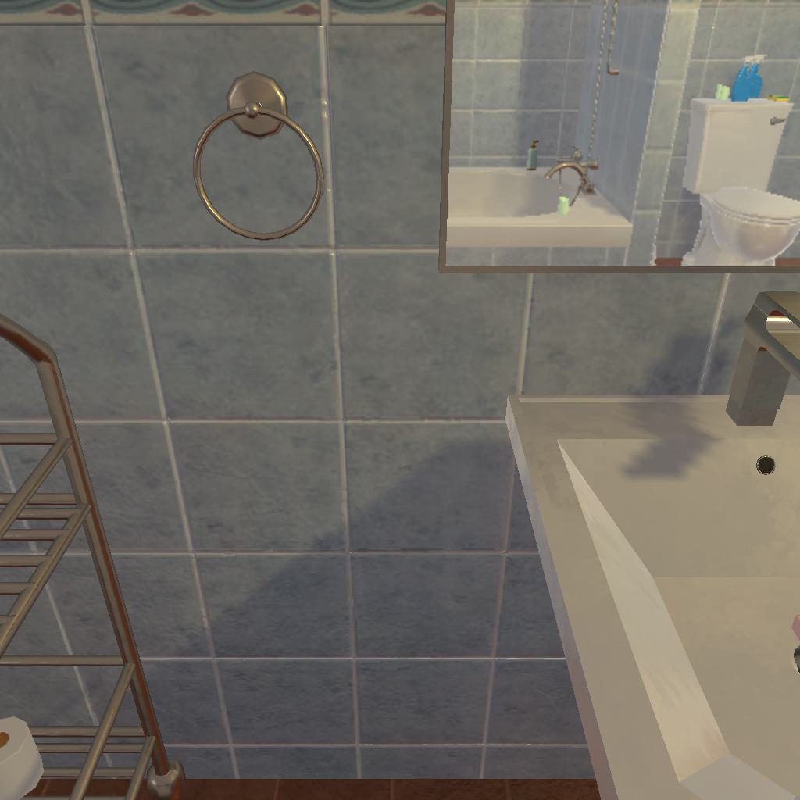

---------------------------------------------------------task: 25---------------------------------------------------------
--------------------------------------------------------------------------------------------------------------------------------------------------------------------
--------------------------------------------------------------------------------------------------------------------------------------------------------------------
Step:--------------------------------------------------------------------------0-------------------------------------------------------------------------------
----------------------------------------
VLM Prompt:
Image1:
**Instruction**
1. Analyze the provided image to identify all visible household objects, focusing on those relevant to the task description "find two dishsponge and put them in cart."
2. Use the analysis of the image and the task hint "The agent must find an object of the desired type, pick it up, find the correct location to place it, put it down there, then look for another object of the desired type, pick it up, return to previous location, and put it down there with the other object." to answer the question: what is the most reasonable action in the choices for the task description "find two dishsponge and put them in cart"?
4. Decide and write the answer using the template: The answer is: (i): , where i is the real number. If there is no desired object in the image, search every place based on **Initial Observation** to find the object. And if no one is exactly correct, choose a similar answer.
**Initial Observation**
You are in the middle of a room. Looking quickly around you, you can see bathtub (1), bathtubbasin (1), cart (1), toilet (1), garbagecan (1), toiletpaperhanger (1), shelf (1-4), sink (1), sinkbasin (1), handtowelholder (1)
**Answer Choices**
(1): go to bathtub 1
(2): go to bathtubbasin 1
(3): go to cart 1
(4): go to toilet 1
(5): go to garbagecan 1
(6): go to toiletpaperhanger 1
(7): go to shelf 1
(8): go to shelf 2
(9): go to shelf 3
(10): go to shelf 4
(11): go to sink 1
(12): go to sinkbasin 1
(13): go to handtowelholder 1
**Answer**
Let's think step by step by following the instructions.
----------------------------------------
----------------------------------------
Original Response:
First, we need to identify if there are any dish sponges visible in the image. Based on the image, there are no dish sponges visible. The image shows a bathroom setting with a sink, mirror, hand towel holder, and other bathroom-related objects.
Next, we refer to the initial observation list to see if dish sponges are mentioned as being in this room. They are not listed, which suggests they may not be in this immediate vicinity.
Given the task description "find two dish sponges and put them in cart," the most reasonable action is to search for the dish sponges in a location where they are likely to be found. In a typical household setting, dish sponges may be found on a shelf or near the sink area.
Since the image does not show any dish sponges and the initial observation does not mention dish sponges, we must search every place to find the object. Among the answer choices, the most similar locations where one might find dish sponges are near the sink or shelf.
Therefore, the answer is: (7): go to shelf 1. If no dish sponge is found there, continue to search the shelves in numerical order and then check near the sink area.
----------------------------------------
----------------------------------------
>>> Refine Original VLM Response and Get Pure Action: No action
----------------------------------------
-----------------------------------------------------------------
Running time: 13.003722190856934 seconds
Total Money: 8.816030000000005
-----------------------------------------------------------------
-----------------------------------------------------------------
Text Observation:Nothing happens.
-----------------------------------------------------------------
UNSUCCEED